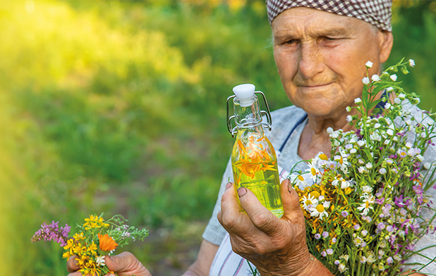
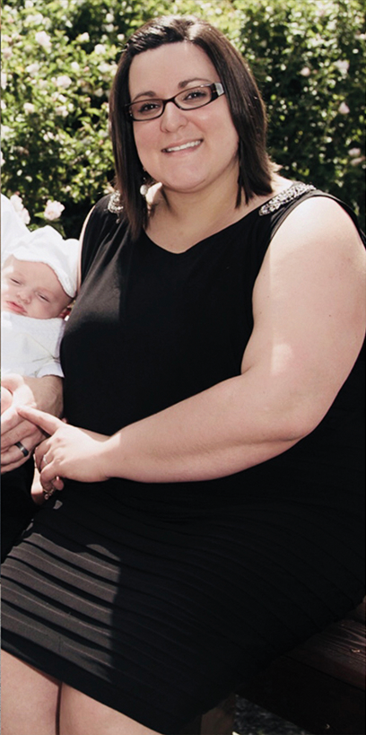
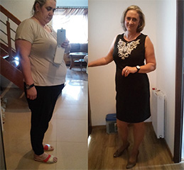

ARTYKUŁY/MEDYCYNA NATURALNA /ZIOŁOWA KURACJA 79-LETNIEJ ZIELARKI...
Ziołowa kuracja 79-letniej zielarki ODCHUDZIŁA już tysiące ludzi!

Pani Faustina (79 l.), Litwa
Pani Faustina mieszka na litewskiej Żmudzi. Przez okolicznych mieszkańców nazywana jest „babcią”. Kiedy pytamy, gdzie mieszka babcia Faustina, wszyscy od razu wiedzą, o kogo chodzi i wskazują, który to dom. Spokojne życie starszej kobiety zmieniło się rok temu. Nagle stała się sławna i rozpoznawalna. Przyjeżdżają do niej tysiące ludzi. Nie tylko z Litwy. W końcu otyłość nazywana jest epidemią XXI wieku, a wszystko wskazuje na to, że babcia Faustina znalazła na nią sposób!
Faustina jako dziecko przeżyła ogromną tragedię
„W wioseczce małej się urodziłam. Siedmioro nas w domu było. Brata miałam i pięć sióstr, ja najmłodsza byłam. W tamtych czasach córkom trzeba było posag przyszykować, żeby mężów znalazły. Rodzice od naszych młodych lat już się tym martwili. Niepotrzebnie, bo jak się okazało nikomu posagu nie trzeba było szykować…” – wspomina babcia ze łzami w oczach.
„Wojna wybuchła, jak 3 latka miałam. Ludzie mi za bardzo nie wierzą, ale ja prawie wszystko pamiętam niemal od urodzenia swojego. Zawsze taka inna byłam… I wybuch wojny też pamiętam! W 1941 r. Ruskie zaczęli nas, Litwinów, na Sybir wywozić. Do naszej chałupy też przyszli. Rodzice nie chcieli domu opuścić, tam ziemia nasza była z dziada pradziada. Skończyło się tym, że brata i tatę oni za chałupę zaprowadzili i zastrzelili. Mamę i siostry starsze złapali, a ja gdzieś w kąt uciekłam. Tak to pamiętam, jakby wczoraj było! Złapał mnie jeden żołnierz ruski, ja mu prosto w oczy spojrzałam, a on…
pobladł, przeżegnał się i uciekł!
Ja wtedy zrozumiałam, że jestem inna, że moc jakaś we mnie jest… Żołnierze zostawili mnie 5-letnią samą w tym domu, mimo że mamusia moja płakała i krzyczała.
Mama z siostrami nigdy z wygnania nie wróciły. Ciotka z wujkiem mnie z sąsiedniej wsi przygarnęli, a jak 16 lat miałam, to wróciłam do swojej rodzinnej opuszczonej chaty. Tu do tej pory mieszkam. Za mąż nigdy nie wyszłam. Sama sobie radzę, bo od młodych lat moich ludzie mi w zamian za moje wróżby i zioła pomagają. Pieniądze dają, jedzenie przynoszą, przy chałupie mi coś zrobią.
Powtarzam wam, że ja inna jestem! Spojrzę ludziom w oczy i już wszystko wiem. Smutki znam, radości, choroby widzę. Kiedyś częściej na wróżby do mnie przychodzili, ja z oczu i ręki wróżyłam. Ale raz przyszła do mnie kobieta młoda i zobaczyłam, że synka jej 3-letniego Pan Bóg zaraz do siebie zabierze. Nie wiedziałam, czy mam jej to powiedzieć czy nie… W końcu nie powiedziałam. Stało się tak, jak przewidywałam, a mnie się wróżenia odechciało. Już tylko ziołami się zajmuję, bo wiem, które na co są.
Ponad rok temu przyszła do mnie córka kuzynki mojej. Inga ma na imię. Ostatnim razem widziałam ją jako dziewczynkę małą, a tu kobieta przyszła. Przytyła bardzo! Wiadomo, że serce człowieka najważniejsze, no ale ja widziałam, że
ona już tyle waży, że to dla jej zdrowia niebezpieczne!
Rozpłakała się i powiedziała, że ma problemy z tarczycą i przez to te kilogramy, bo wcale tak dużo nie je. A niedawno też w ciąży była i kilogramów jeszcze przybyło. Bała się, że się mężowi podobać przestanie. Ja znam zioła, po których kilogramów ubywa. Wiem, jak je łączyć i jak podawać. Przygotowałam Indze taką mieszankę. Po jakimś miesiącu, może dwóch, była jeszcze szczuplejsza niż przed ciążą.
Inga Saszenko przed i po wypróbowaniu ziołowej kuracji babci Faustiny.

PRZED ZASTOSOWANIEM
PO ZASTOSOWANIU
Potem przyszły do mnie Ingi koleżanki, które też potrzebowały się odchudzić. Dawałam im tę mieszankę. No i wieści się rozeszły! Coraz więcej ludzi do mnie przyjeżdżało. I kobiet, i mężczyzn. Spokoju człowiek nie miał!”
O ziołowej kuracji odchudzającej pani Faustiny dowiedziała się profesor dietetyki Jovita Orlova, autorka wydanej w 2019 r. książki „Otyłość to choroba”. Orlova od lat próbowała znaleźć coś, co pomoże milionom ludzi zmagającym się z otyłością. O babci Faustinie, do której przyjeżdżali ludzie z całej Litwy, zaczęły pojawiały się wzmianki w prasie i Internecie. Orlova udała się do babci Faustiny po słynną ziołową mieszankę. Po przebadaniu jej dietetyczka przeprowadziła testy z udziałem 68 osób z różnym rodzajem otyłości. Wszyscy, całkowicie bezpiecznie dla zdrowia
w czasie 1,5 miesiąca stracili od 16 do 27 kilogramów!
Orlova opisała ziołową kurację babci Faustiny w kilku pismach naukowych i obecnie robi wszystko, aby stała się ona powszechnie dostępna. Profesor dietetyki jest przekonana, że ta nieznana dotąd starsza kobieta stworzyła przełomową kurację, która może uwolnić zachodnie społeczeństwa od plagi otyłości. Babcia Faustina została nominowana do tytułu „Kobiety Roku 2022” na Litwie.
Kuracja pani Faustiny niemal natychmiast stała się popularna w całej Europie! Ludzie chudną na potęgę i tak opisują działanie tej niezwykłej kuracji:

„Czegoś takiego na odchudzanie jeszcze nie było!”
„Na początku, jak przeczytałam, że jakaś zielarka znalazła coś na odchudzanie, to się zaśmiałam. Ale potem pomyślałam, że skoro lekarze mi nie pomogli, to mogę i czegoś od zielarki spróbować. Za duża byłam, odkąd skończyłam jakieś 14 czy 15 lat. Mojemu mężowi nie przeszkadzało, że ważę za dużo, no ale po urodzeniu drugiego dziecka ważyłam już 102 kilo! Coraz gorzej się czułam, nie miałam siły za dziećmi biegać, więc zaryzykowałam i zamówiłam ten preparat. To po prostu rewelacja!!! Do tej pory nie było czegoś podobnego. Naprawdę nie trzeba ćwiczyć (przy dwójce małych dzieci to nawet czasu na to nie mam), jeść można jak zwykle (a ja nigdy mało nie jadłam), a kilogramy same spadają. Idealne dla młodych mam. Używam tego od miesiąca. Zrzuciłam już 21 kilo i odchudzam się dalej! Marzy mi się 60 kilo, a może i mniej”.
„Mąż mówi, że ma teraz nową żonę!”
„Jak byłam młodsza, to jeszcze czasem udało mi się parę kilogramów zrzucić, ale po menopauzie już nie dawałam rady. Miałam wrażenie, że tyję z powietrza, bo wcale tak dużo nie jadłam. Żeby schudnąć, musiałabym się chyba głodzić! Dopiero koleżanka powiedziała mi o tym ziołowym preparacie, bo sama schudła z nim ponad 20 kilo, i to bardzo szybko. Zamówiłam i… cuda się działy! Nic nie musiałam więcej robić, tylko ten preparat brać, a kilogramy same spadały. Po tygodniu już miałam wszystkie ciuchy za luźne. W sumie w 1,5 miesiąca zrzuciłam 18 kilo! Mąż mówi, że ma teraz nową żonę!”
„Cieszę się, że ta pani dietetyk wzięła ode mnie recepturę i to w świat pójdzie, bo ja już nie mam siły tyle osób codziennie przyjmować. Na tytułach żadnych mi nie zależy, ale jak coś z tego będzie, to na biednych przeznaczę. Mam nadzieję, że ta kuracja wielu osobom pomoże, nie tylko na Litwie, ale i na całym świecie. Dużo szczęścia wszystkim życzę!” – kończy rozmowę babcia Faustina.
Rozpoczęła się dystrybucja kuracji odchudzającej opartej na recepturze zielarki Faustiny. Na razie w 13 europejskich krajach, również w Polsce. Dzięki dofinansowaniu Europejskiego Funduszu Walki z Otyłością możemy Państwu zaoferować 100 opakowań kuracji całkowicie ZA DARMO!
Kliknij, aby sprawdzić dostępność darmowych opakowań preparatu >>>>
Daga
Nigdy nie przypuszczałam, że po ciąży mi prawie 15 kilo zostanie. Myślalam, że to szybko zrzuce, ale gdzie tam! Jeszcze kolejne 2 kilo doszly. Preparat od tej zielarki to rewelacja. Te kilogramy same zlatują, zanim się zorientowałam, ważyłam mniej niż przed ciaza!